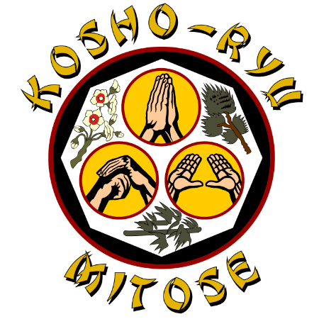

En nuestro dojo, honramos dos linajes principales del Kenpo. Haz clic en cada estilo para conocer su historia, filosofía y enfoque únicos.
Fu-Shi Kenpo
[Aquí va la información sobre el Fu-Shi Kenpo. Explica su historia, quién fue su creador, cuáles son sus características principales, su filosofía, etc.]
Puntos Clave:
Creador: [Nombre del creador]
Enfoque: [Ej: Defensa personal directa, movimientos lineales]
Filosofía: [Breve descripción de su filosofía]
Características: [Detalles adicionales]
Kosho Ryu Kenpo

Conceptos básicos
KO – [antiguo] SHO – [pino] Ryu – [escuela] {antigua escuela del pino} KEN – [puño] PO – [ley] {ley del puño}
«Se cree que el nombre del estilo proviene de la memoria de un gran maestro Mitose que recibió un mensaje espiritual de Dios mientras rezaba y meditaba bajo un viejo pino. Este descendiente había cambiado su religión al budismo. Estudió las enseñanzas de Buda y el yoga japonés (el yoga japonés es similar al yoga indio en apariencia). Sin embargo, es diferente. Este mensajero espiritual de Dios le mostró al gran maestro cómo escapar de los atacantes sin sufrir daños físicos, utilizando solo el contacto corporal para ejecutar las artes de empujar y tirar. Como se ha expuesto, un ser humano no tiene derecho a matar o herir a otro ser humano, sino que debe prescindir de las armas para demostrar su pacifismo a los demás. «
El Kosho Shorei True and Pure Karate and Kenpo consiste en yoga japonés combinado con ejercicios de defensa personal. Estos incluyen patrones de «paz» y «escape» que hacen un uso extensivo de las artes de salto.
Las artes de salto utilizan predominantemente los grandes músculos de las piernas y, por lo tanto, son muy eficaces para aumentar la frecuencia cardíaca durante su ejecución. Dado que el corazón se especializa en bombear sangre y dar vida, los ejercicios aeróbicos regulares lo fortalecerán.
Un beneficio adicional de estos ejercicios aeróbicos es el desarrollo y fortalecimiento de los vasos sanguíneos que rodean el corazón. Este desarrollo y fortalecimiento de los capilares proporciona una circulación satisfactoria en caso de que los vasos principales del corazón se bloqueen. Los ejercicios de Kosho Shorei mantienen la salud a través de ejercicios aeróbicos eficientes. También se incluye un sistema de nutrición y técnicas para aumentar y mantener la flexibilidad del cuerpo a través de estiramientos.
En Kosho Shorei, se entrena a los alumnos para que sean totalmente conscientes de todos los aspectos de su entorno, para que anticipen toda la psicología y Kosho - Shorei.
Sin embargo, en otro nivel de Kosho - SHOREI se encuentra el sistema religioso coherente con la tradición judeocristiana, al que se añaden las enseñanzas de Buda. En Kosho - Shorei se utiliza la meditación y la recolección de energía como técnicas para desarrollar un estado de reposo necesario para alcanzar la paz interior y la armonía.
El arte de la autodefensa de Kosho-Ryu
El Kenpo Jiu-Jitsu es un arte de prácticas de autodefensa del Lejano Oriente. Entre las artes marciales en las que no se utilizan armas, ninguna otra puede superar o compararse con el arte del Kenpo. En cualquier civilización, los enfrentamientos físicos entre individuos son a veces inevitables y, para que una persona pueda salir victoriosa, la autodefensa es esencial.
El Kenpo permite a una persona defenderse con un solo puño contra un oponente agresivo. El poder del Kenpo es milagroso y verdaderamente más allá de la explicación de las palabras. El espíritu más íntimo y verdadero del Kenpo reside en la humildad y el autocontrol, y debe practicarse de acuerdo con la conciencia mental y las creencias en Dios.
El estudiante entrena diligentemente con el desarrollo del espíritu como objetivo principal y, una vez dominados los fundamentos, experimenta por sí mismo con el objetivo de ofrecer contribuciones prácticas al arte. Una parte del arte conocida como Go Shin Jutsu (arte de la autodefensa) es la preservación de los derechos humanos que Dios ha inculcado en cada uno de nosotros. La garantía de la paz y el orden, y la promoción de la felicidad es la humanidad.
El arte del Kenpo es similar al judo atemi. Sin embargo, el arte y la filosofía son diferentes. Los kenpoistas enseñan la ejecución de maniobras y cómo hacer que el oponente se coloque en una posición en la que pueda ser atacado.
LA JUVENTUD DE HOY
La generación joven de hoy está cansada de que se le recuerde la iglesia y las filosofías de la religión, «haz el bien y evita el mal». Es necesario abordar ese problema, y el kenpo proporciona ese enfoque.
A medida que los jóvenes de hoy aprenden kenpo, casi sin darse cuenta, se les inculca la fe en Dios. El kenpo fomenta la confianza y sus características se moldean para convertirse en algo fino, limpio y bueno. Sin que se les obligue, están dispuestos a emprender cualquier tarea que se les presente, convirtiéndose así en ciudadanos rectos, respetables y respetuosos con la ley.
«Reflexión final»
El Kenpo que se enseña más popularmente en los Estados Unidos proviene del sistema desarrollado en Hawái por el gran gran maestro James M. Mitose, que tiene como alumnos a Thomas Young y al profesor William Chow. Fue en 1976 cuando James Mitose salió de su retiro y restableció el sistema Kosho Ryu Kenpo. Tras su muerte en 1981, su hijo Thomas B. Mitose asumió el cargo de Gran Gran Maestro del sistema. Así, la tradición del Kenpo Mitose, establecida hace veintidós generaciones, continúa y permanece intacta.
– LEMA –
Por favor, creed en Dios, respetad la ley, especialmente no utilicéis la violencia ni infringáis la ley por ningún motivo y cooperad con todos los agentes de la ley. Vivid en paz y sed felices. ¡¡¡Gracias!!!
Material Adicional
Descarga el PDF con la explicación completa del escudo de Kosho Ryu.